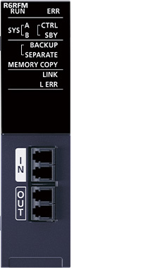
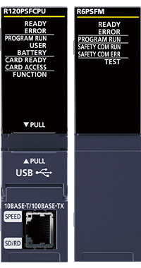
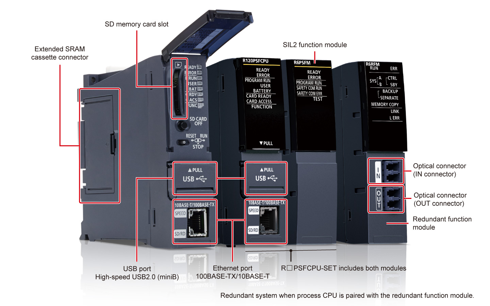
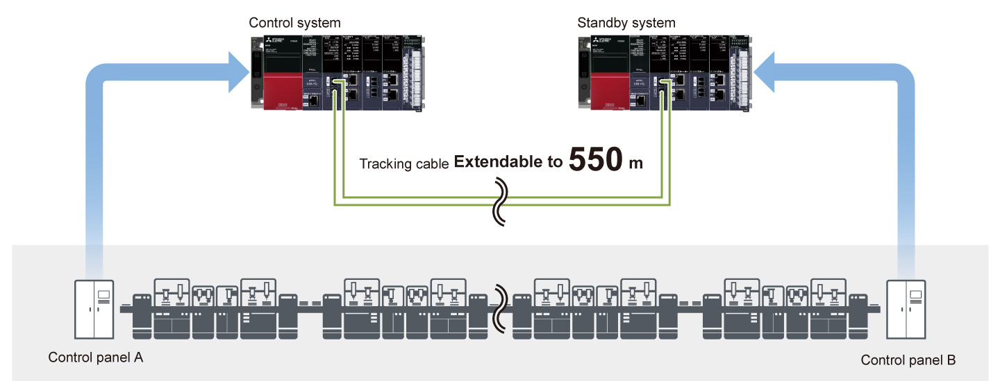
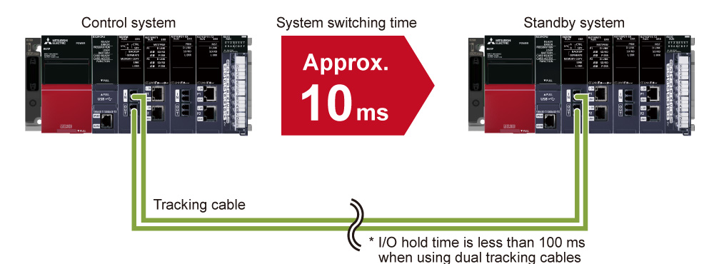
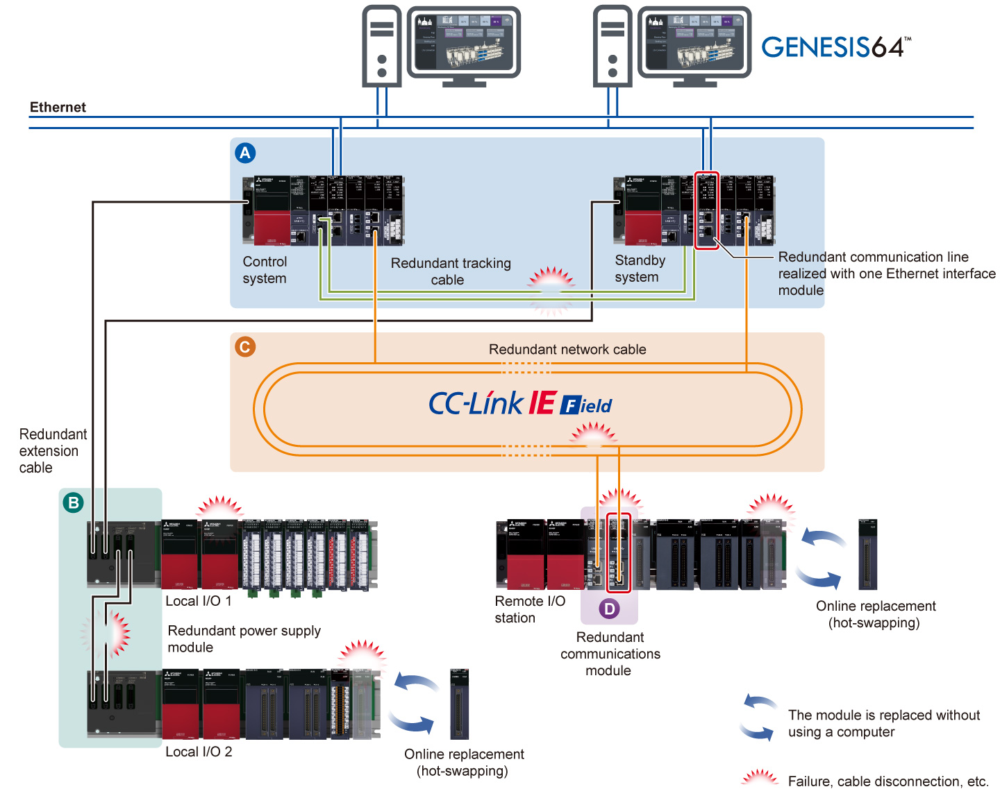
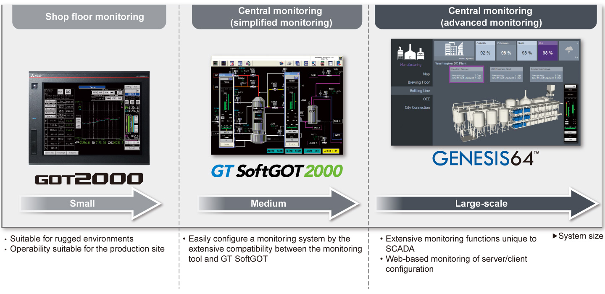
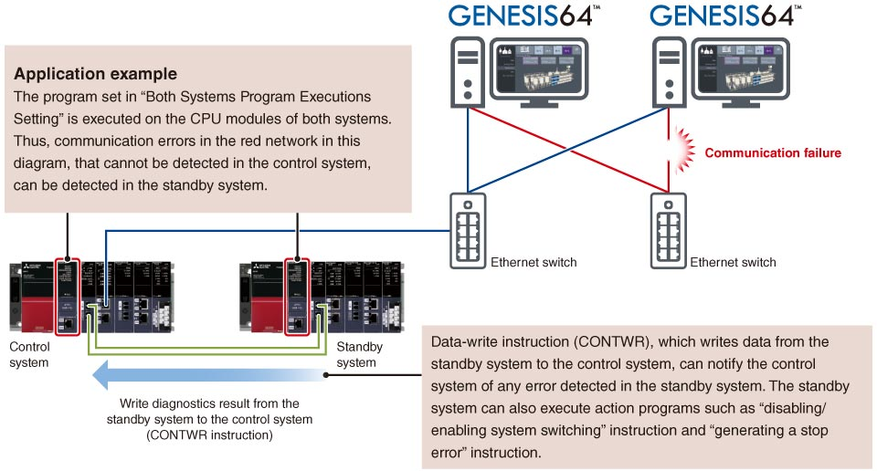

Controllers MELSEC iQ-R Series Product features -CPU-

Process CPU module SIL2 process CPU module Redundant function module
The process CPU modules are highly flexible according to process applications from simple loop control to complicated loop control. Initial and maintenance costs can be reduced by replacing a highly-specialized distributed control system (DCS) with a process programmable controller. When paired with the redundant function module, a highly reliable redundant control system is realized.

Redundant function module

SIL2 process CPU moduleIEC 61508 SIL 2

Interface

Features<sup>DCS style features in a cost-efficient automation control system</sup>
- Extensive process instructions
- Max. 300 control loops
- Low cost
- The process control system enables execution of dedicated process instructions (such as two-degree-of-freedom PID, sample PI, and auto-tuning) and large-scale process control with a maximum of 300 loops
- Low-cost automation system equal to DCS capabilities without the financial burden is realized
Redundant system flexible installation
- Extendable to 550 m
- Flexible system configuration
- Optical-fiber tracking cables enable the standby system to be installed in a remote location up to 550 m from the control (primary) system
- The control panel installation is easier with less constraints to cable length, allowing flexible system configuration

Fast system switching realizes highly reliable control
- Optical fiber cable
- Fast system switching
- Highly reliable
- The tracking cables are immune to noise interference and support fast data transfer rates
- System switching speed from the control system to standby system has also been improved to speeds of approximately 10 ms, further improving system reliability

Operation not interrupted even when an error occurs
- Single-point failure reduction
- Variety of redundant configuration
- Online replacement
-
The redundant system can minimize the risk of singe-point failure in various redundant configurations which may vary depending on the use and the size of control system. Operation is not interrupted even when an error occurs
- Redundant configuration consisting of the control (primary) and standby CPUs
- Redundant extension cable with redundant extension base unit*1
 Redundant network configuration with a dual cable topology of CC-Link IE Field Network
Redundant network configuration with a dual cable topology of CC-Link IE Field Network- Redundant remote head module (dual remote stations)
- Online replacement of cables and modules (hot-swapping) is possible while continuously operating the system when an error occurs, enabling prompt troubleshooting
- *1.Supported by the process CPU module (R□PCPU) only.

Efficient engineering through extensive compatibility between software and devices
- Efficient screen creation
- Highly scalable system
- Efficient engineering
- Screen creation is easier in an efficient engineering environment realized by the extensive compatibility between the engineering software GX Works3 together with SCADA software GENESIS64™, GT SoftGOT2000, and GOT2000
- Scalable SCADA control systems can be realized combining these products

Detect errors in connected devices and networks on each system
- Diagnostics of both systems in the redundant system
- Improved redundant system reliability
- An error in an external device or network of the systems (control system and standby system) can be detected by executing a program that diagnoses external devices or networks of both redundant systems.

Specifications
Process CPU module/SIL2 process CPU module specifications
LD : Ladder diagramST : Structured textFBD : Function block diagramSFC : Sequential function chart
| Item | R08PCPU | R16PCPU | R32PCPU | R120PCPU |
|---|---|---|---|---|
| Operation control method | Stored program cyclic operation | |||
| I/O control mode | Refresh mode (Direct access I/O is available by specifying direct access I/O (DX, DY)) | |||
| Programming language | LDSTFBDSFC |
|||
| Extended programming language | Function block (FB), label programming (system/local/global) | |||
| Program execution type | Initial*2, scan*2, fixed scan, event execution*2, standby*2 | |||
| Number of I/O points (X/Y) | 4096 | 4096 | 4096 | 4096 |
| Constant scan (ms) (function for keeping regular scan time) |
0.2…2000 (setting available in 0.1 ms increments) |
|||
| Memory capacity | ||||
| Program capacity (step) | 80K | 160K | 320K | 1200K |
| Program memory (byte) | 320K | 640K | 1280K | 4800K |
| Device/label memory (ECC type)*3 (byte) | 1188K | 1720K | 2316K | 3380K |
| Data memory (byte) | 5M | 10M | 20M | 40M |
| Instruction processing time | ||||
| LD instruction (ns) | 0.98 | 0.98 | 0.98 | 0.98 |
| MOV instruction (ns) | 1.96 | 1.96 | 1.96 | 1.96 |
| E + instruction (floating-point addition) (ns) | 9.8 | 9.8 | 9.8 | 9.8 |
| Structured text IF instruction*4 (ns) | 1.96 | 1.96 | 1.96 | 1.96 |
| Structured text FOR instruction*45 (ns) | 1.96 | 1.96 | 1.96 | 1.96 |
| PC MIX value*5 (instructions/µs) | 419 | 419 | 419 | 419 |
| Interface connection port | ||||
| High-speed USB2.0 (miniB) | ● | ● | ● | ● |
| Ethernet (100BASE-TX/10BASE-T) | ● | ● | ● | ● |
| Memory interface*6 | ||||
| SD memory card | ● | ● | ● | ● |
| Extended SRAM cassette | ● | ● | ● | ● |
| Function*7 | ||||
| Multiple interrupt | ● | ● | ● | ● |
| Standard PID control | ● | ● | ● | ● |
| Process control | ● | ● | ● | ● |
| Data logging | ● | ● | ● | ● |
| Security function | ● | ● | ● | ● |
| Inter-module synchronization*8 | ● | ● | ● | ● |
| SLMP communication | ● | ● | ● | ● |
| Online module change | ● | ● | ● | ● |
| Simple CPU communication*9 | ● | ● | ● | ● |
| Web server | ● | ● | ● | ● |
| Item | R08PSFCPU-SET*10 | R16PSFCPU-SET*10 | R32PSFCPU-SET*10 | R120PSFCPU-SET*10 |
|---|---|---|---|---|
| Operation control method | Stored program cyclic operation | |||
| I/O control mode | Refresh mode (Direct access I/O is available by specifying direct access I/O (DX, DY)) | |||
| Programming language | LDST*2FBD*2 |
|||
| Extended programming language | Function block (FB), label programming (system/local/global) | |||
| Program execution type | Initial*2, scan*2, fixed scan, event execution*2, standby*2 | |||
| Number of I/O points (X/Y) | 4096 | 4096 | 4096 | 4096 |
| Constant scan (ms) (function for keeping regular scan time) |
0.2…2000 (setting available in 0.1 ms increments) |
|||
| Memory capacity | ||||
| Program capacity (step) | 80K (40K for safety programs)*11 |
160K (40K for safety programs)*11 |
320K (40K for safety programs)*11 |
1200K (40K for safety programs)*11 |
| Program memory (byte) | 320K | 640K | 1280K | 4800K |
| Device/label memory (ECC type)*3 (byte) | 1178K | 1710K | 2306K | 3370K |
| Data memory (byte) | 5M | 10M | 20M | 40M |
| Instruction processing time | ||||
| LD instruction (ns) | 0.98 | 0.98 | 0.98 | 0.98 |
| MOV instruction (ns) | 1.96 | 1.96 | 1.96 | 1.96 |
| E + instruction (floating-point addition) (ns) | 9.8 | 9.8 | 9.8 | 9.8 |
| Structured text IF instruction*4 (ns) | 1.96 | 1.96 | 1.96 | 1.96 |
| Structured text FOR instruction*4 (ns) | 1.96 | 1.96 | 1.96 | 1.96 |
| PC MIX value*5 (instructions/µs) | 419 | 419 | 419 | 419 |
| Interface connection port | ||||
| High-speed USB2.0 (miniB) | ● | ● | ● | ● |
| Ethernet (100BASE-TX/10BASE-T) | ● | ● | ● | ● |
| Memory interface*6 | ||||
| SD memory card | ● | ● | ● | ● |
| Extended SRAM cassette | ● | ● | ● | ● |
| Safety standard | ||||
| IEC 61508 SIL 2 | ● | ● | ● | ● |
| Function*7 | ||||
| Multiple interrupt | ● | ● | ● | ● |
| Standard PID control | ● | ● | ● | ● |
| Process control | ● | ● | ● | ● |
| Security function | ● | ● | ● | ● |
| SLMP communication | ● | ● | ● | ● |
| Online module change | ● | ● | ● | ● |
- *2.Cannot be used for safety control programs.
- *3.An extended SRAM cassette expands the device/label memory area. (NZ2MC-8MBSE expands the device/label memory area conforming to ECC type memory.)
- *4.The IF or FOR sentence of the structured text consists of several instructions, which may increase the processing time period.
- *5.Average number of instructions such as for basic instructions and data processing executed in 1 µs. The larger the value, the faster the processing speed.
- *6.For more information, click here to refer to the SD memory card and SRAM cassette specifications.
- *7.Memory dump and real-time monitor are not supported.
- *8.Inter-module synchronization is not supported when used in redundant mode.
- *9.Click here for the list of connectable devices supporting simple CPU communication function.
- *10.Product package includes a SIL2 process CPU module (R□PSFCPU) and SIL2 function module (R6PSFM).
- *11.Up to 40K steps of the program capacity can be used for safety programs.
Redundant function module specifications
| Item | R6RFM |
|---|---|
| Connection cable | Multi-mode optical cable |
| Max. distance (m) | 550 (when the core outer diameter is 50 µm) |
| Tracking cable data capacity (word) | 1M |